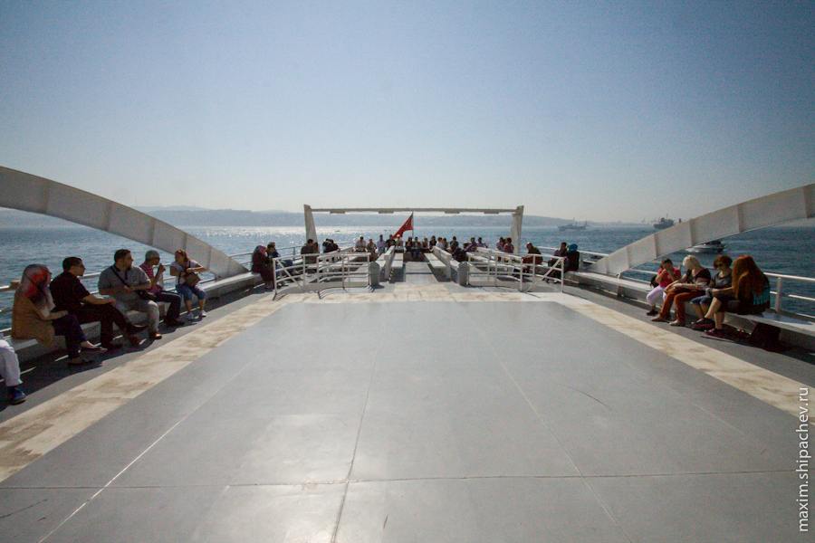

Погода располагала, стало совсем уже тепло и на восьмой день пребывания в Стамбуле мы решили сплавать «на острова».
Принцевы острова, или, как их именуют в Стамбуле, Adalar (т.е. просто острова), — это группа из девяти островов. На острова плавает большинство туристов, плыть на пароме не очень долго, и, по слухам, на островах есть пляжи, чтобы искупаться. Опять же по слухам, туристов пускают только на 4 из 9 островов. Но, возможно, слух возник из-за того, что только на четыре острова плавает паром (общественный транспорт).
Встаём пораньше, садимся на трамвай, едем до конечно остановки, пристани Бешикташ. Оттуда начинает движение множество паромов, и мы надеемся, что займём отличные от стоячих места.
Сразу покупаем билеты и садимся на отправляющийся через 10 минут паром. Наш паром, кстати, коммерческий. Отличается от официального городского транспорта тем, что выглядит, как правило, приличней, не заходит на каждый из островов, и на нём нельзя рассчитаться акбилем и нет скидки для ребёнка.

Отправляемся в чуть больше чем часовое плавание.
Островов, на которые плавает паром, как я уже писал, четыре: Бююкада, Хейбелиада, Бургазада, Кыналыада. Острова все небольшие, мы выбираем для посещения самый дальний и большой — Бююкаду. Его площадь чуть больше 5 квадратных километров, тем не менее на острове расположены аж три посёлка и живут больше 7000 человек.
Лев Троцкий на Бююкаде ждал визы в Мексику
Принцевы Острова, назвали принцевыми, потому что во времена Византийской империи острова были местом ссылки знатных особ, потом, ближе к 20-му веку турки сообразили, что это не очень-то и наказание. Знатным особам, возможно, начали отрубать головы, а Острова стали местом отдыха уже других знатных особ.
Отметились на Островах и наши соотечественники. На Бююкаде жил до своего конца князь Дмитрий Борисович Голицын, и не до конца жил Лев Троцкий.

Примечательны острова ещё и тем, что, несмотря на тысячи жителей и десятки тысяч туристов, на островах нет автомобильного движения. Местные жители и туристы передвигаются пешком, на электроскутерах или велосипедах, и на гужевом транспорте.
Мы взяли напрокат велосипед, чтобы было веселее.
Все велосипеды на острове пронумерованы. Ну и не думаю, что на острове легко украсть велосипед. В смысле украсть-то легко, но что с ним делать, на острове?
О недостатках гужевого транспорта — ниже
Из-за отсутствия автомобильного транспорта на острове поначалу испытываешь совершенно необычные ощущения. Здесь очень хорошо. Узкие улочки, ухоженные дома на берегу моря, неспешно гуляющие туристы. Хочется здесь остаться, но понимаешь, что таких мест на планете много. К тому же не очень понятно, как сюда привозить стройматериалы.
Автомобили вытеснены с островов, конечно, не полностью. Пожарные пользуются всё-таки современным транспортом, а не конями или слонами. Мусор тоже вывозят традиционные мусоровозы. Врач наверняка не едет с мигалкой на велосипеде.
Зафиксированы и электромобили. Нам показалось, что это сотрудники местного сельсовета.
До пляжей прямо от пристани возят на катерах, но мы предпочли пляжу прогулку по острову.
Есть у обилия гужевого транспорта совершенно логичный недостаток. Запах, производимый лошадьми достаточно специфичен, и нельзя сказать что приятен носу среднестатистического жителя экологически чистого Кемерова. Пахнет на центральных улицах везде, устойчиво и очень. Мы спасались переулками.
Делаем круг на пару-тройку километров по острову и возвращаемся в центр.
Была даже идея прокатиться на карете, но идею отмели. Очередь «на кареты» — человек 100. Поездка стоит 70 лир, то есть около 1100 рублей.
Садимся на паром в обратную сторону.
Этот паром уже обычный, двигается по маршруту через все острова, нам неймётся и мы выходим на следующем острове — Хейбелиаде. Люди за решёткой ждут прибывающего парома. К сожалению я понял, что мы вскоре будем среди них, только ступив на землю Хибелиады.
На Хейбелиаде мы не стали устраивать особых прогулок, а, купив солнцезащитный крем, устроились в тени кафе, ожидая парома. Народу на паромах плавает много. я даже переживал за некоторые из них.
К времени нашего отплытия с Хейбелиады значительно потеплело.
Мы сели на очередной паром и поплыли в европейскую часть Стамбула.